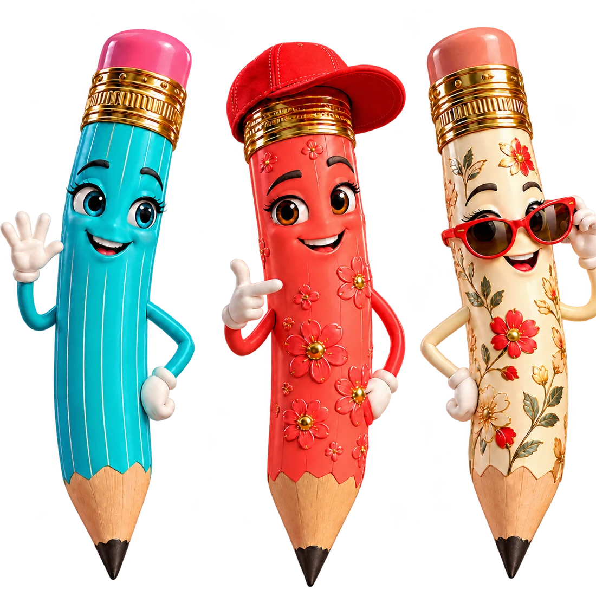
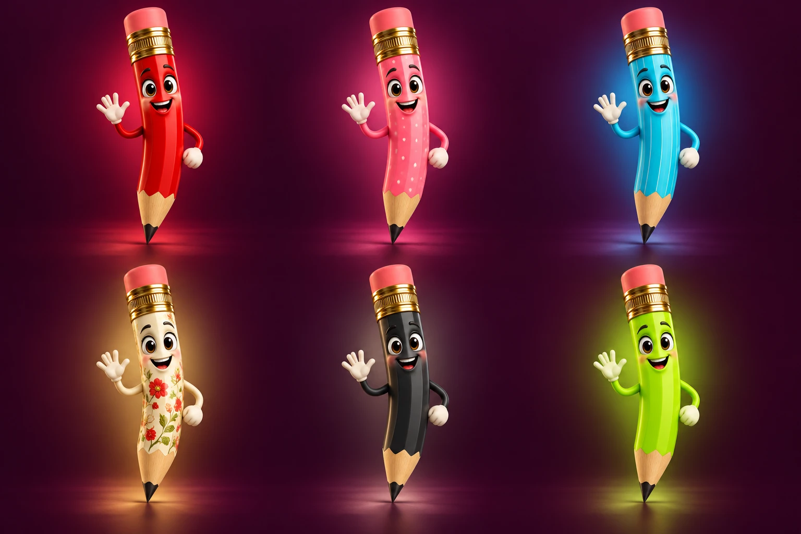

Mint blind
Receive a blank pencil. Trait rarity is decided by its owner, not by a mint roll.
 ITTIESHOUSE OF JOSHI
ITTIESHOUSE OF JOSHI
A COLLECTION OF LITTLE CHARACTERS
Meet the Itties: pencils with their own style, expression, and place in the world. Each one begins with a simple idea—make a mark.
↓ START WITH A BLANK
COLLECTION 001 · ITTIES AN IDEA, SHARPENED.THE GENESIS LOOP / 01
Mint an uninitialized pencil directly to your connected wallet. The first look is yours to choose in the Lab.
Collection contract is not configured yet.
CHARACTER STUDIES
Three art directions for the collection. Each minted token begins as a blank pencil and takes shape in the Lab.
SELECTED STUDYSky
VISUAL DIRECTION · NOT A MINTED TOKENTHE ITTY LAB WORKBENCH / 02
Unlock your token, choose a look across seven trait layers, and save it to the wardrobe vault. The first build is free in the blueprint.
Connect a wallet to access your Itties.
SIGNATURE LOOKS
Start from one of the three pencil directions, then adjust each trait below.
03 / CHOOSE A LAYER
Seven layers · six options each
Selected traits are saved to the contract wardrobe.

AI 3D CONCEPT SHEETSELECT A CELL TO EXPLORE
A LOOK THAT EVOLVES
The Itty protocol is designed for a character you can keep revisiting.
Receive a blank pencil. Trait rarity is decided by its owner, not by a mint roll.
Unlock the workbench with your token ID. Save a first look across the seven trait categories.
Return to your vault and switch among traits you have unlocked. Restyles are designed around a small micro-fee.
THE LASTING MARK
When an Itty reaches ten wins, the blueprint retires it to the Hall of Fame. Its holder can then forge a new genesis blank.
A SMALL IDEA WITH ROOM TO GROW
Itties is a standalone digital collectible world by House of Joshi. Each character starts blank, takes shape in the Lab, and can earn a place in the Hall of Fame. Future game collaborations are designed to stay separate from the collection’s ownership and value.